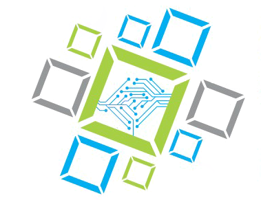
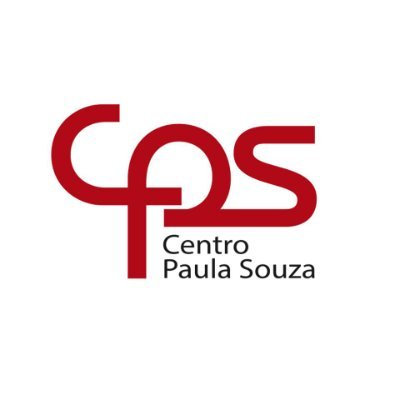

Bem vindo(a) ao meu currículo! Sou mais conhecida como Fran, nasci em 12 de Novembro de 1991. Tenho
alguns hobbies como tocar bateria e jogar video-game(Nintendo switch principalmente),
amo cozinhar e brincar com os meus pets.
Atualmente trabalho na Diretoria de Ensino de SV como Analista de Suporte Jr, mas
meu sonho é trabalhar na área de Desenvolvimento, portanto estou disponível para estágios ツ
Competências:
Java e JSF
C++ e C#
Ruby on Rails
SpringBoot
HMTL 5
CSS 3
JavaScript
React js
API Rest
Node.js
PHP
Sql Server e Mysql
Ionic, Cordova e Phonegap
Photoshop, Illustrator e XD
Bootstrap
WordPress
Haskell e Yesod
Arduíno
Windows Vista, 7, 8 e 10
Linux Ubunto, Slax, Lite
Certificados
Semana Omnistack 11
Node.js e React Native (Mar/2020)

Artigo Científico
Tema: "The Crabs: Desenvolvimento de aplicativo para gerenciamento de condomínio"(Nov/2020)

Design Thinking
(Ago/2019)
DEVOPS ESSENTIALS
Professional Certificate (Jan/2019)
SCRUM FOUNDATION ESSENTIALS
Professional Certificate (Jan/2019)
Workshop INTEL
Inteligência Artificial (Set/2017)
Startup In School
(Ago/2016)
Inglês
(2008-2012)
Formação Acadêmica
Técnico em Programação - ETEC Dr Ruth Cardoso (2017)
Tecnólogo em Sistemas para Internet - FATEC Rubens Lara (2019)">
Tecnólogo em Sistemas para Internet - FATEC Rubens Lara (2019)MBA Pós em Gestão de Projetos - EAD FAVENI (2020)Gestão de Tecnologia da Informação - EAD Unicesumar (Atualmente)